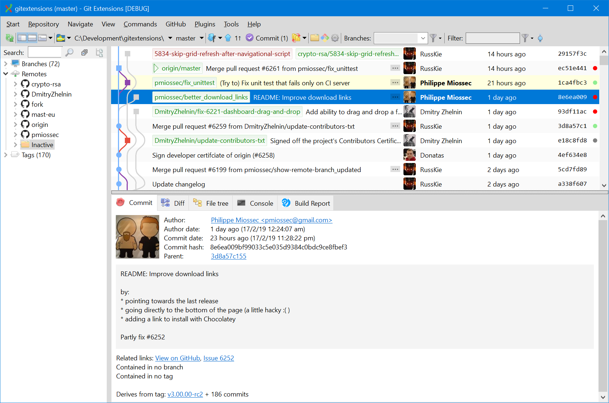

GUI Git Clients
We didn't want to mention this earlier, but there are GUI clients for working with Git projects. Some folks find this easier than the command line, particularly if they're visual learners or more comfortable with GUIs. Here's a list of popular GUI clients:
Free
- Github Desktop a free, open-source project from the Git behemoth. It's a simple interface that allows you to visualize commits or commit with others. Github Desktop can also be integrated in with editors, if you'd like. Read more about Github Desktop here.
- Git Extensions a free, standalone Git GUI client that runs on Mac, Linux and Windows. Allows for viewing commits, file history, diffs, etc! Read more about Git Extensions here.
- git-gui is a simple, open-source Git GUI that can run on Unix-like systems and Windows. It's relatively lightweight, allowing for making changes to repositories and file annotation, but does not provide a project history.


Paid
- Fork is a fast Git GUI client for Mac and Windows. It allows for all Git activity, as well as interactive rebases. Fork can display all the commands that run behind a Git action from the GUI, so you can start with this GUI, then learn and switch to command line.
- IntelliJ's IDEA Git Integration We mentioned IDEA as a visual code editor in the previous module, but IDEA also has an excellent Git integration that allows for credential caching and all manner of Git actions.